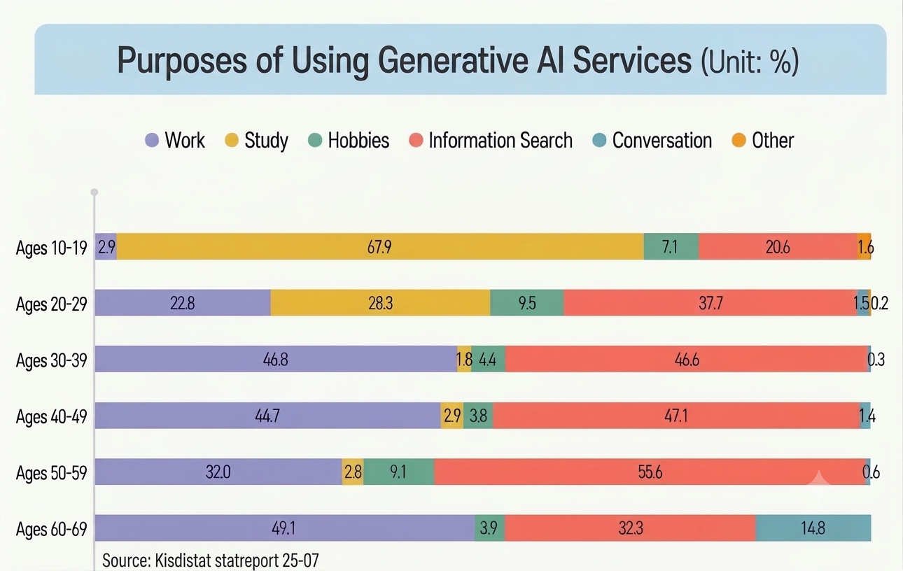

MEET KANANA
Kanana is Kakao's personalized AI service designed to understand conversations, offer helpful information, and support users in their everyday lives.
WHAT IS KAKAOTALK?
Kakao is a South Korean technology company best known for developing KakaoTalk, the country's most widely used messaging application. More than 96% people in South Korea use KakaoTalk.
In addition to basic messaging, KakaoTalk provides many other features, including group chats, animated stickers, Voice Talk and Face Talk for free data-based voice and video calls, digital gifts, shopping, food ordering, and a digital wallet. Because so many daily services are connected to the app, KakaoTalk has become an important part of everyday life in South Korea.
WHAT IS KANANA?
In 2025, Kakao launched its AI service, Kanana. The name KANANA represents the idea of 'AI that understands me best.'' It was created by combining parts of the words Kakao, Native, and Natural.
One feature that makes Kanana different from many other AI services is its on-device AI model. Kanana can work within KakaoTalk chat rooms and understand the context of users' conversations. Instead of waiting for the user to ask a question, it can proactively send helpful suggestions when they are needed.
Kanana does more than respond to simple commands. It considers the flow and context of a conversation to provide more personalized answers. Its goal is to go beyond being a basic conversational AI and become an AI mate or agent that can work as a personal assistant in everyday life.
AI FOR MORE THAN WORK
According to statistics about the purposes of using generative AI services published by KISDI STAT, most people use generative AI for work, school, and information searches.
Kanana aims to expand the ways people use generative AI. In addition to helping users find information, it can support everyday conversations, hobbies, social plans, and personal activities. Through these features, Kanana seeks to make AI more convenient and useful in users' daily lives.

HOW TO USE KANANA
Getting started with Kanana in KakaoTalk
STEP 01
FIND KANANA
Find Kanana in your KakaoTalk Friends list and start using it immediately.
STEP 02
ENABLE FEATURES
Go to Settings → Kanana → Kanana Lab to enable Chat and Call Summary or Try Kanana Templates.
Device Compatibility
Kanana in KakaoTalk is currently available only on certain devices that support its on-device AI model. Support for additional devices is expected to expand gradually.